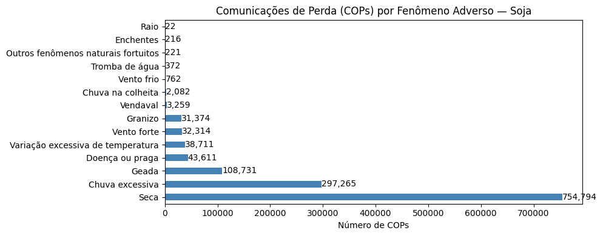
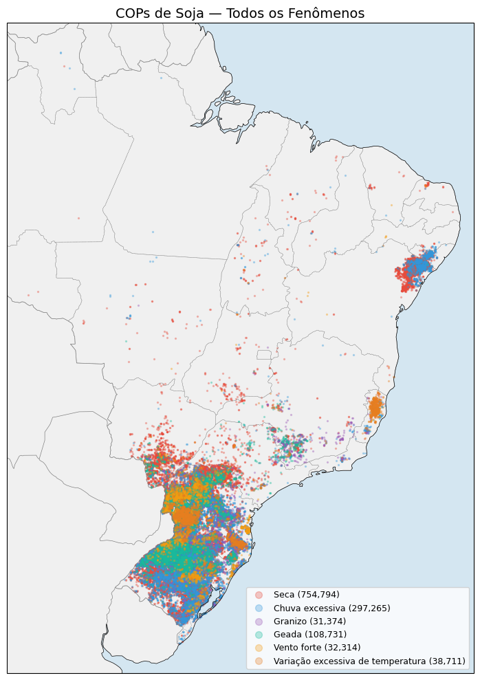
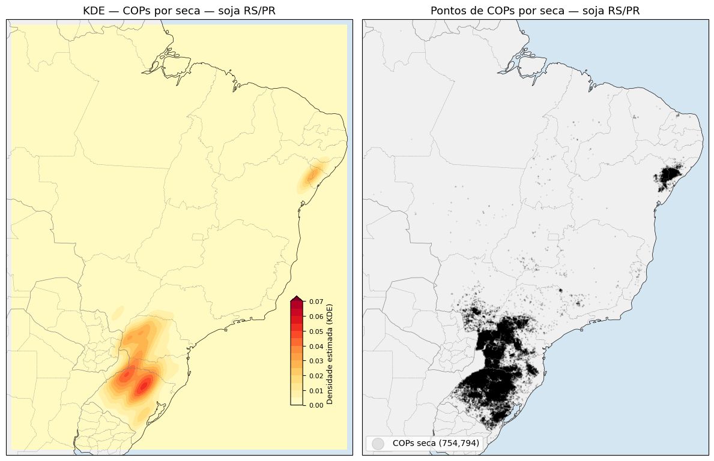
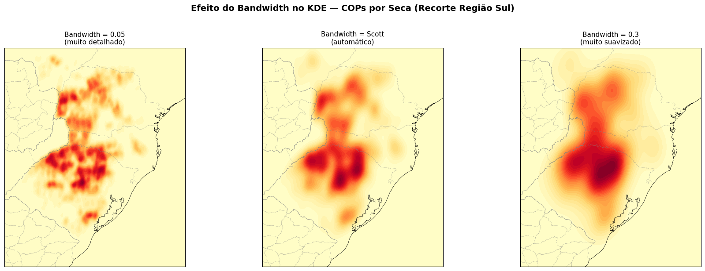
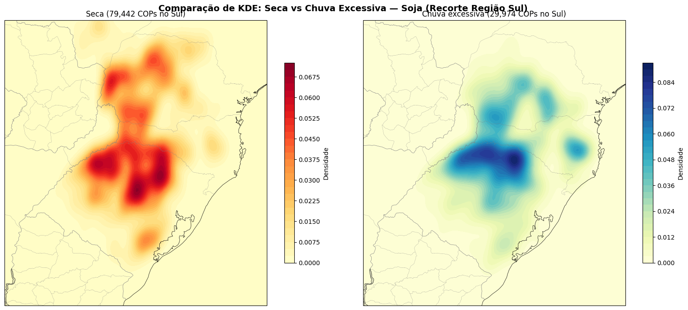
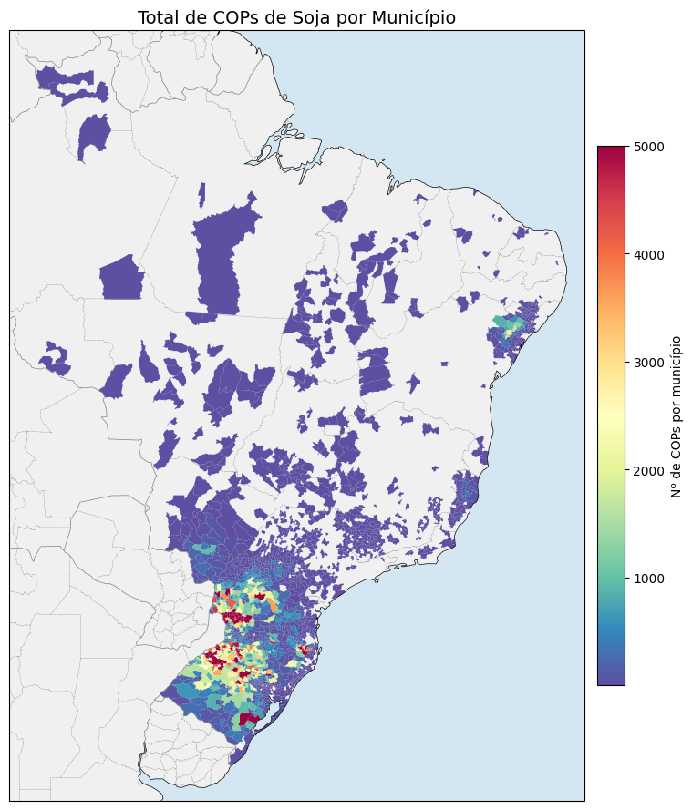
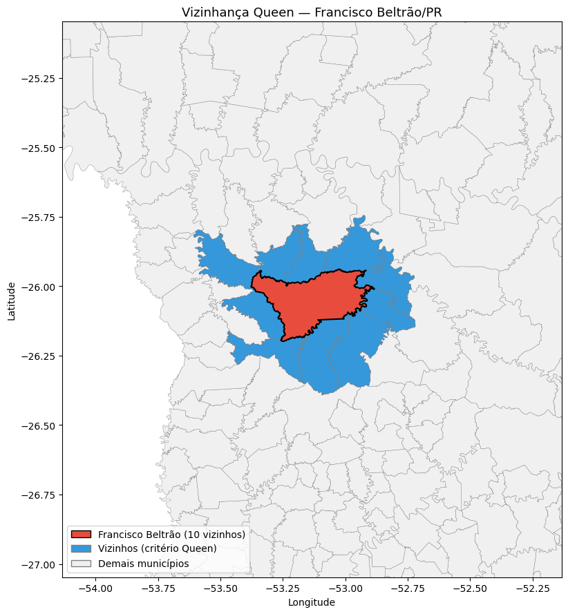
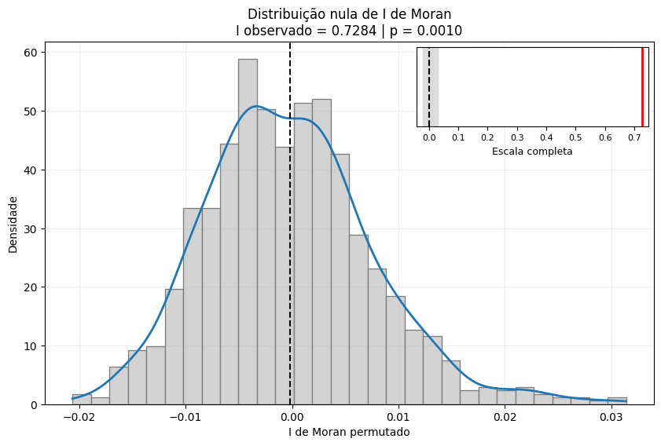
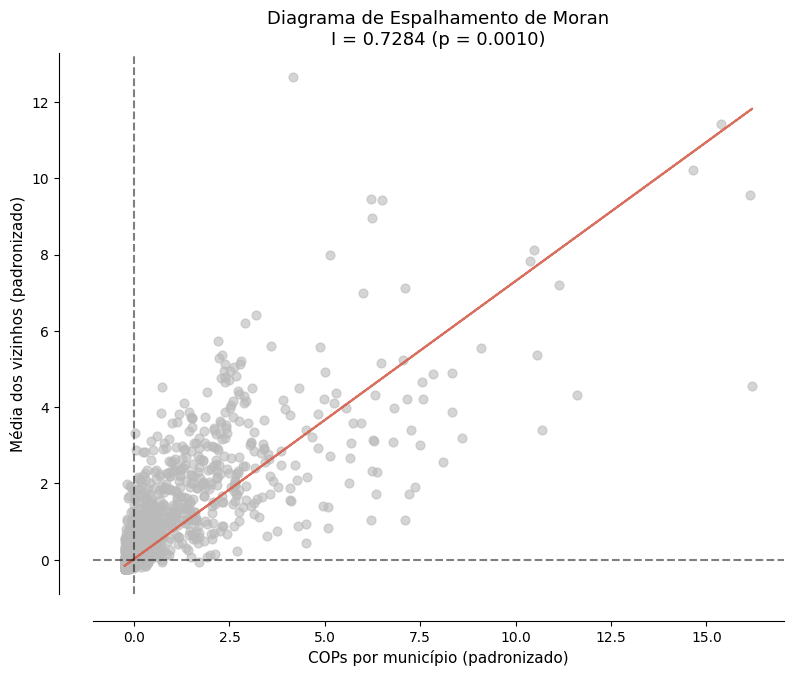

Bloco 1 — KDE e I de Moran global (município)
Pergunta condutora da aula:
“Onde se concentram os sinistros de soja no Brasil? Essa concentração é fruto do acaso ou existe um padrão espacial real?”
Duas técnicas respondem essas perguntas em sequência:
Técnica |
Pergunta que responde |
Tipo de dado |
|---|---|---|
KDE (Kernel Density Estimation) |
Onde os sinistros se concentram? |
Pontos (coordenadas das glebas) |
I de Moran Global |
Existe padrão espacial ou é aleatório? |
Valores por área (município) |
Dependências
pip install geopandas cartopy libpysal esda splot mapclassify
Parte 1 — carga e exploração
Repetimos a limpeza do Sicor do Bloco 0 e simplificamos as coordenadas para reduzir custo computacional:
import pandas as pd
df = pd.read_csv('sicor-interest-data.csv').rename(columns={
'latitude_centroide': 'latitude',
'longitude_centroide': 'longitude',
})
df['longitude'] = pd.to_numeric(df['longitude'], errors='coerce').abs() * -1
df['latitude'] = pd.to_numeric(df['latitude'], errors='coerce')
df = df.dropna(subset=['longitude', 'latitude'])
df = df.loc[df['latitude' ][(df['latitude' ] >= -34) & (df['latitude' ] <= 6)].index]
df = df.loc[df['longitude'][(df['longitude'] >= -75) & (df['longitude'] <= -33)].index]
# Simplifica as coordenadas para reduzir pontos coincidentes
df[['longitude', 'latitude']] = df[['longitude', 'latitude']].round(2).drop_duplicates()
Exploração inicial:
df['nome_evento'].value_counts()
df['cd_estado' ].value_counts()
df['ano_emissao'].value_counts().sort_index()
Gráfico rápido de barras por fenômeno:

Figura 39 - Frequência de COPs por fenômeno adverso para soja no recorte.
Mapa rápido das COPs por fenômeno (Cartopy):

Figura 40 - COPs por fenômeno — seca em vermelho, chuva excessiva em azul, granizo em roxo, geada em verde-água.
Parte 2 — KDE (kernel density estimation)
Analogia da vela
Imagine cada COP como uma vela acesa no mapa. Cada vela emite luz que se espalha — mais forte no centro, mais fraca nas bordas. Onde tem muitas velas juntas, a luz é intensa. O KDE soma as “luzes” e produz uma superfície contínua. O bandwidth é o alcance da luz de cada vela.
Passos do KDE:
import numpy as np
from scipy.stats import gaussian_kde
df_seca = df[df['nome_evento'] == 'Seca'].copy()
longitude_seca = df_seca['longitude'].values
latitude_seca = df_seca['latitude'].values
coordenadas_seca = np.vstack([longitude_seca, latitude_seca])
coordenadas_seca = coordenadas_seca[:, ~np.isnan(coordenadas_seca).any(axis=0)]
# 200×200 grade
lon_min, lon_max = df_seca['longitude'].min() - 0.5, df_seca['longitude'].max() + 0.5
lat_min, lat_max = df_seca['latitude' ].min() - 0.5, df_seca['latitude' ].max() + 0.5
grade_lon = np.linspace(lon_min, lon_max, 200)
grade_lat = np.linspace(lat_min, lat_max, 200)
grade_lon_2d, grade_lat_2d = np.meshgrid(grade_lon, grade_lat)
kde = gaussian_kde(coordenadas_seca, bw_method='scott')
pontos_grade = np.vstack([grade_lon_2d.ravel(), grade_lat_2d.ravel()])
densidade_2d = kde(pontos_grade).reshape(grade_lon_2d.shape)

Figura 41 - Painel à esquerda: KDE da concentração de COPs por seca em soja. À direita: pontos individuais sobre o mapa para conferência visual.
Aviso
Alta densidade de COPs não significa necessariamente mais risco real. Pode apenas indicar mais área de soja — e portanto mais contratos, e mais COPs naturalmente. Para separar os efeitos, normaliza-se pela área plantada ou pelo número de contratos.
Efeito do bandwidth

Figura 42 - Três bandwidths para o mesmo conjunto: pequeno (esquerda) revela detalhes locais e ruído; Scott (centro) é o compromisso automático; grande (direita) borra tudo em uma única mancha.
Seca × chuva excessiva: padrões distintos

Figura 43 - KDE comparado entre seca e chuva excessiva no Sul do Brasil. Se os mapas mostram padrões distintos, isso reforça que os fenômenos têm lógicas espaciais diferentes.
Parte 3 — do ponto para o município
O I de Moran trabalha com valores associados a áreas. Contamos COPs por município e ligamos ao shapefile do IBGE:
cops_por_municipio = (
df.groupby('cd_ibge_municipio')
.size()
.reset_index(name='total_cops')
)
cops_por_municipio['cd_ibge_municipio'] = (
cops_por_municipio['cd_ibge_municipio'].astype(str)
)
import geopandas as gpd
gdf_mun = gpd.read_file('BR_Municipios_2024.zip').to_crs('EPSG:4674')
gdf_mun['CD_MUN'] = gdf_mun['CD_MUN'].astype(str)
gdf_analise = gdf_mun.merge(
cops_por_municipio,
left_on='CD_MUN', right_on='cd_ibge_municipio',
how='left',
)
gdf_analise['total_cops'] = gdf_analise['total_cops'].fillna(0).astype(int)
Mapa coroplético:

Figura 44 - Mapa coroplético com total de COPs por município. Comparado ao KDE, agrega por fronteira administrativa — útil para gestão e tomada de decisão, mas sujeito ao MAUP (Bloco 2).
Parte 4 — I de Moran global
Matriz de vizinhança queen
Dois municípios são vizinhos Queen se compartilham qualquer parte da fronteira (mesmo um único ponto):
from libpysal.weights import Queen
pesos = Queen.from_dataframe(gdf_analise, use_index=False)
print(f'Média de vizinhos por município: {pesos.mean_neighbors:.1f}')

Figura 45 - Município com mais COPs (vermelho) e seus vizinhos Queen (azul). Visualizar a vizinhança é a melhor forma de pegar erros antes do I de Moran.
Tratamento de islands
Municípios sem vizinhos (islands, ex.: Fernando de Noronha) devem ser removidos antes do cálculo:
w = Queen.from_dataframe(gdf_analise)
print('Islands:', w.islands)
gdf_sem_islands = (gdf_analise.drop(index=w.islands)
.copy()
.reset_index(drop=True))
w = Queen.from_dataframe(gdf_sem_islands)
w.transform = 'r' # padronização por linha
Cálculo com permutações de Monte Carlo
from esda.moran import Moran
valores = gdf_sem_islands['total_cops'].values
moran_global = Moran(valores, w, permutations=999)
print(f' I observado: {moran_global.I:.4f}')
print(f' Valor esperado: {moran_global.EI:.4f}')
print(f' p-valor (sim.): {moran_global.p_sim:.4f}')
print(f' z-score: {moran_global.z_sim:.4f}')
Distribuição nula com inset

Figura 46 - Distribuição nula construída por 999 permutações. O valor observado fica tão longe da nuvem aleatória que um inset precisa ser usado para mostrá-lo.
Diagrama de Moran
from splot.esda import moran_scatterplot
fig, ax = plt.subplots(figsize=(8, 8))
moran_scatterplot(moran_global, ax=ax, aspect_equal=True)

Figura 47 - Diagrama de Moran. A maioria dos pontos cai nos quadrantes HH e LL, comprovando autocorrelação positiva — clusters de muitas COPs cercados por muitas COPs, e o oposto.
I de Moran por fenômeno
for fenomeno in ['Seca', 'Chuva excessiva', 'Granizo', 'Geada']:
valores_f = gdf_analise[fenomeno].values
moran_f = Moran(valores_f, pesos, permutations=999)
print(f'{fenomeno:<20} I={moran_f.I:.4f} p={moran_f.p_sim:.4f}')
A seca tende a ter o maior I (padrão regional forte, cobre extensões grandes); o granizo tem I bem menor (fenômeno localizado de microescala).
Resumo do bloco
Técnica |
O que faz |
Entrada → Saída |
|---|---|---|
KDE |
Estima densidade contínua a partir de pontos |
Coordenadas → superfície de calor |
I de Moran |
Testa autocorrelação espacial global via permutação |
Valores por município + W → I, p-valor, diagrama |
Próximos passos
Bloco 2 — LISA, MAUP, falácia ecológica e Getis-Ord Gi* — onde estão os clusters (LISA), efeito da escala (MAUP) e confirmação com Gi*.
Quantificando autocorrelação espacial: O índice I de Moran — fundamentos teóricos do I de Moran.